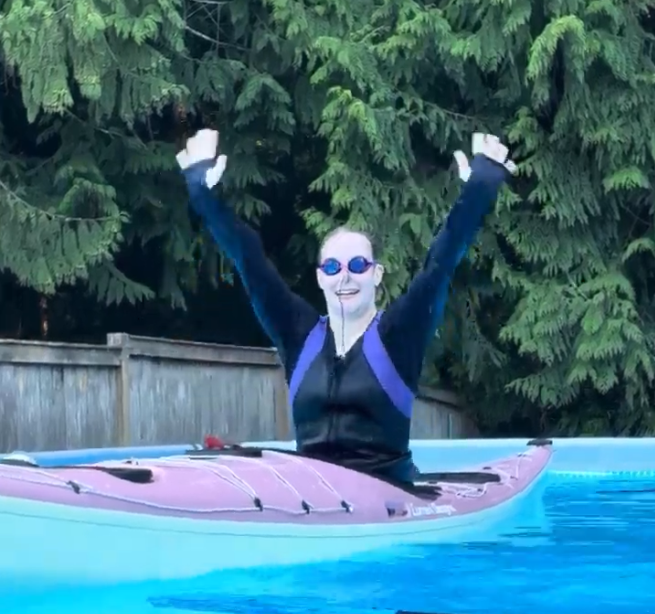

Audrey is a sea kayaker and SUP enthusiast who loves to paddle so she can connect with all the coastal flora and fauna. She lends GIS support to both our product and research initiatives. She is a student in Environmental Science at Western Washington University.